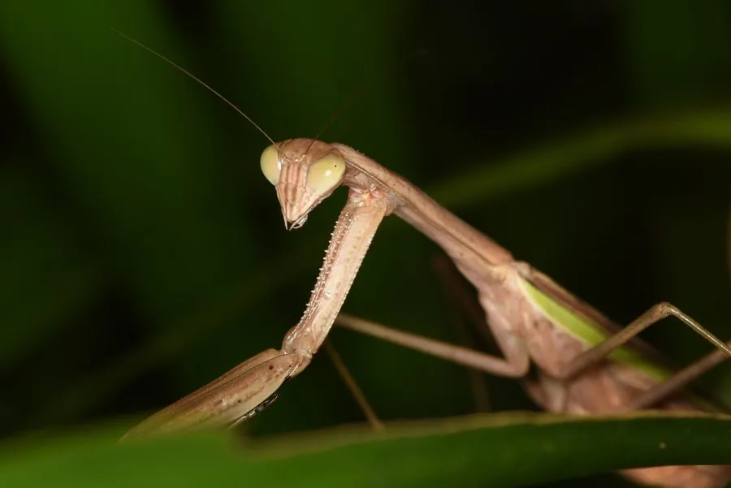

昆虫 · 动物界
中华巨斧螳 Tenodera aridifolia

体型硕大的绿色螳螂，前足粗壮如斧，常静止在草丛和灌丛中伏击蝗虫与蛾类，是中国最常见的螳螂之一。
- 分类
- 门节肢动物门纲昆虫纲目螳螂目科螳螂科属大刀螳属
- 栖息环境
- 草丛、灌丛、农田和林缘，常停在草茎上
- 地理分布
- 中国大部分地区，以及日本、朝鲜和东南亚
- 保护级别
- 暂无评估
物种志
中华巨斧螳成虫体长 70–90 mm，雌虫可达 100 mm 以上，是中国体型最大的螳螂之一。体多呈绿色，也有褐色型；前胸背板细长，前足基节和腿节粗壮，内缘有两排利刺，形如两把巨斧；前翅狭长，超过腹部末端。
中华巨斧螳分布于中国大部分地区以及日本、朝鲜和东南亚，生活在草丛、灌丛、农田和林缘。它是典型的伏击型捕食者，常静止在草茎上，用中后足固定身体，前足高举，等蝗虫、蛾类、蝇类甚至小型蛙类靠近便闪电般合拢捕捉。雌虫在秋季产卵，卵鞘（螵蛸）固定在枝条或墙壁上，越冬后翌年春季孵化。中华巨斧螳是农田中重要的天敌昆虫，能捕食多种害虫，也常被作为观赏昆虫饲养。
形态与习性
- 食性捕食蝗虫、蛾类、蝇类甚至小型蛙类
- 体长70–90 mm，雌虫可超过 100 mm
- 前足基节和腿节粗壮，内缘有两排利刺
- 体色多为绿色，也有褐色型
- 繁殖秋季产卵鞘（螵蛸），越冬后孵化
- 益虫农田中重要的天敌昆虫
趣味知识
- 中华巨斧螳是中国体型最大的螳螂之一，雌虫可超过 10 cm。
- 它的卵鞘就是中药里的螵蛸，常粘在枝条和墙壁上越冬。
- 螳螂捕食时前足合拢只需零点几秒，猎物几乎没有逃跑机会。